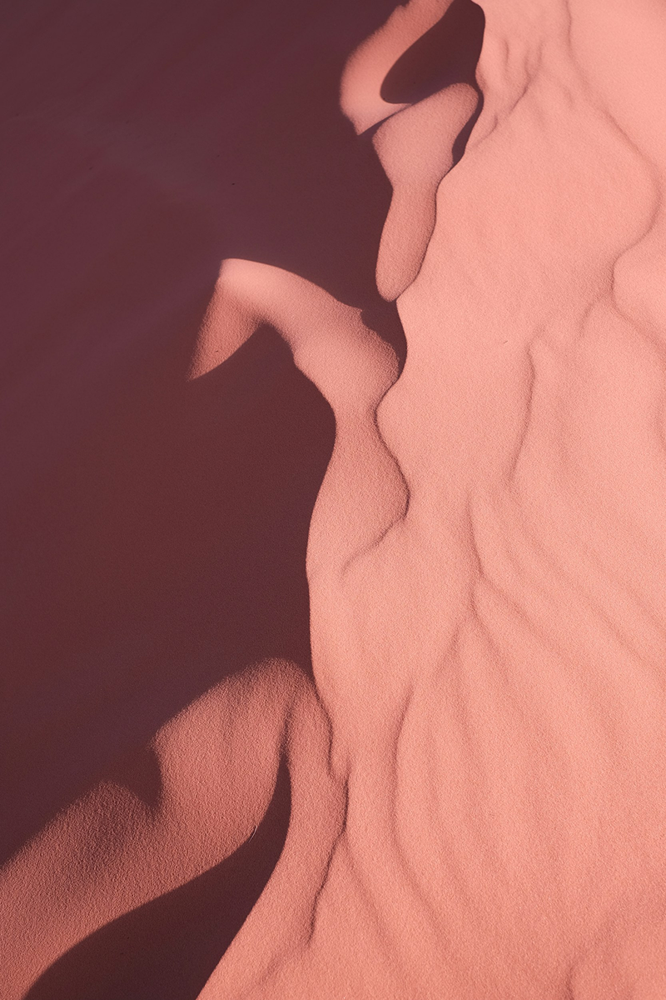

Overview
Rooted Portraits is a body-positive photography booking platform that celebrates natural beauty by placing subjects within natural landscapes. The site invites users to embrace their authentic selves through artistic portrait photography.

A photography website that promotes body positivity, handles bookings, and displays portraits in staggered gallery.
Figma
Rooted Portraits is a body-positive photography booking platform that celebrates natural beauty by placing subjects within natural landscapes. The site invites users to embrace their authentic selves through artistic portrait photography.
Most photography booking sites treat the gallery and the booking flow as two separate concerns bolted together — a portfolio page here, a scheduling widget there. For a body-positive brand, that disconnect matters more than usual: the visual experience of the gallery needs to carry the brand's message right up until the moment someone books, not stop short of it.
This project was design-led rather than research-driven — the decisions below came from direct exploration and iteration on the brand itself, not competitive analysis or user testing.

A responsive, filterable gallery showcasing portrait work with smooth transitions and full-screen viewing options

User-friendly scheduling interface allowing clients to browse available sessions and book appointments directly

Flesh-toned color palette with organic shapes and nature-inspired imagery that reinforces the brand's message of embracing natural beauty
Early color exploration leaned toward browns and tans as the literal palette for a body-positive brand, but that read as flat rather than warm. Shifting the language from "skin tones" to "flesh tones" opened the palette up to the pinks and deep reds used throughout the site now — colors that still feel organic and human, without flattening into a single literal skin color.
A darker red was the first instinct for an accent color, but it blended into the rest of the palette instead of standing out. The golden yellow does what the darker red couldn't: it harmonizes with the pinks and reds while still being distinct enough to draw the eye to calls-to-action.
The staggered columns throughout the site are a deliberate nod to growth and nature — offset the way branches reach upward, giving the layout an organic feel without losing structure. I deliberately kept image containers rectangular rather than circular or leaf-shaped: the photography itself needs to be the focal point, and an ornamental frame around every portrait would compete with the work it's meant to showcase.
Created an intuitive user experience that aligns with the brand's body-positive mission.
Because this project was design-led rather than tested with real users, the natural next step would be putting the gallery and booking flow in front of actual clients — particularly to see whether the staggered layout holds up as a usability choice, not just a visual one, once real photos and real booking data are in it.